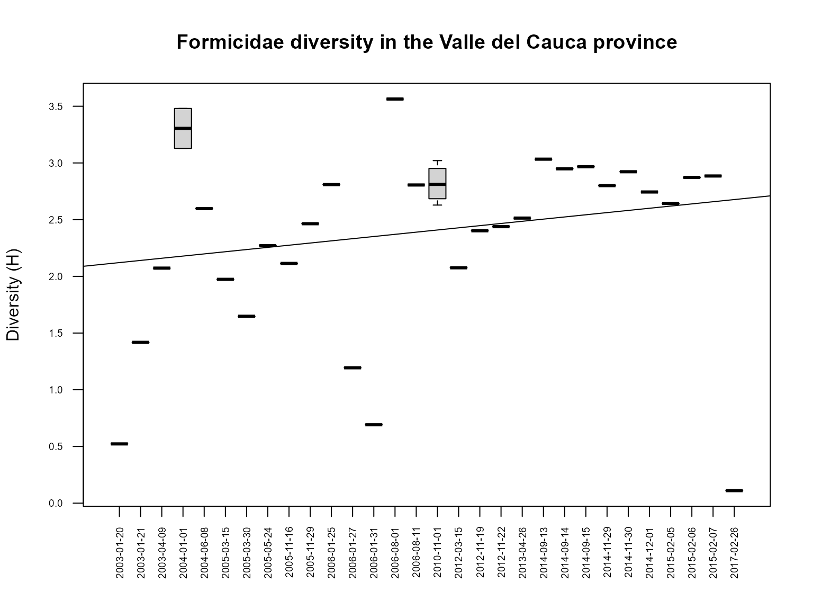
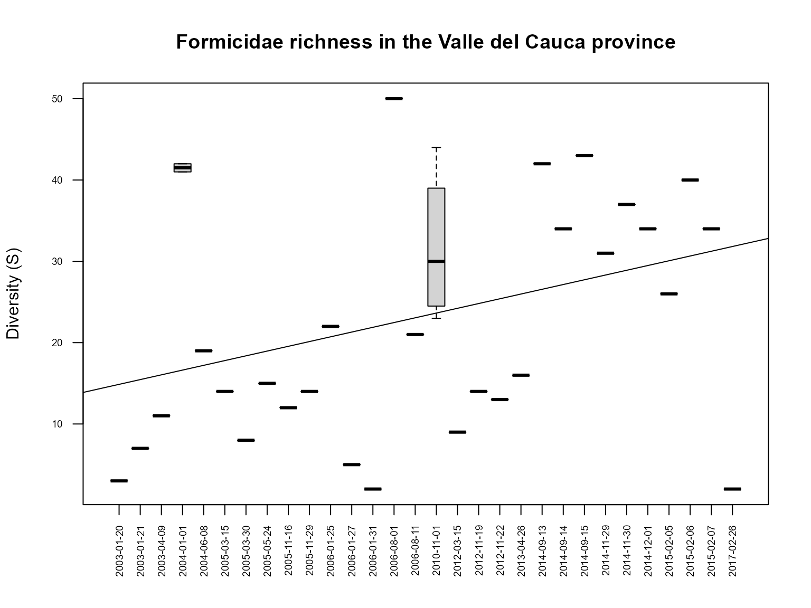
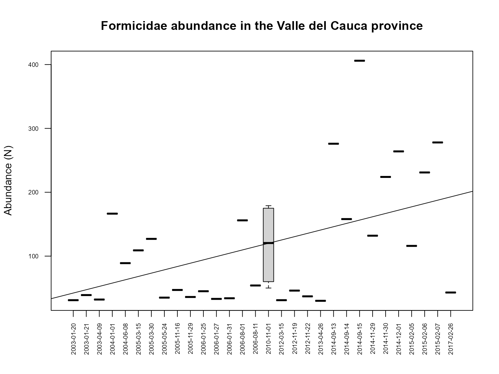
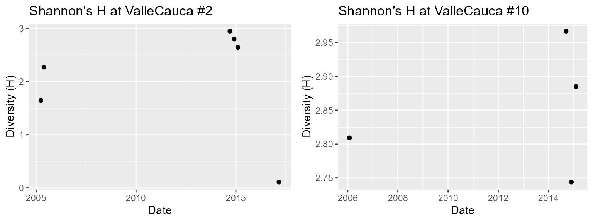
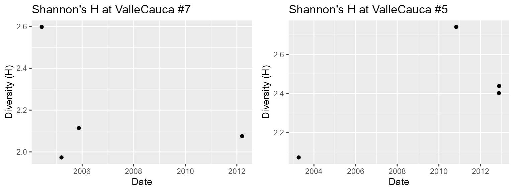
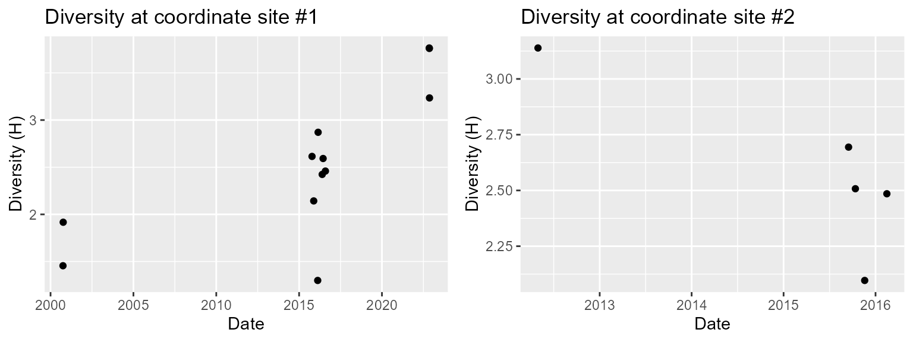
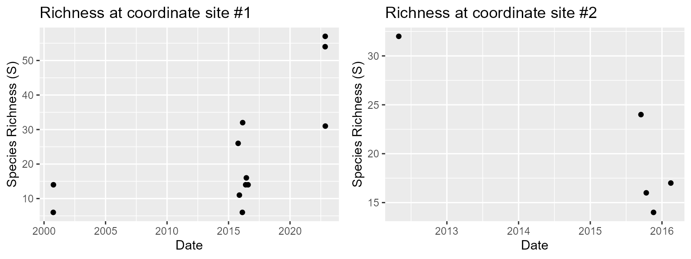
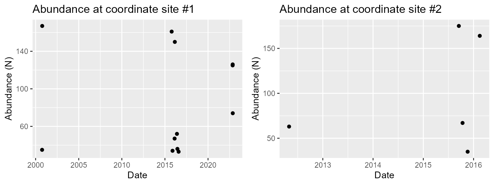

Diversity Statistics: Auto Clustering, Charting, and Mapping
diversity_statistics.Rmd
library(DivInsight)
#> Warning: replacing previous import 'dplyr::combine' by 'gridExtra::combine' when loading 'DivInsight'
#> Warning: replacing previous import 'gridExtra::combine' by 'dplyr::combine' when loading 'DivInsight'
#> Warning: replacing previous import 'dplyr::combine' by 'gridExtra::combine' when loading 'DivInsight'
data("Colombia")
library(dplyr)
#>
#> Attaching package: 'dplyr'
#> The following objects are masked from 'package:stats':
#>
#> filter, lag
#> The following objects are masked from 'package:base':
#>
#> intersect, setdiff, setequal, union
library(gridExtra)
#>
#> Attaching package: 'gridExtra'
#> The following object is masked from 'package:dplyr':
#>
#> combineIntroduction
The DivInsight package can be used to repurpose
historical occurrence taxon data in order to generate diversity index
values for different dates and locations.
Included in the package is the Colombia dataset, which contains
occurrence data for the taxon ‘Formicidae’ at the Family level from 2000
to 2023. This data was queried from the Global Biodiversity Information
Facility (GBIF) database using the rgbif package.
Each row of the occurrence dataframe has data for an observed
individual. The dataset has many variables but the most important ones
for the functions in DivInsight pertain to taxa names,
coordinate location, and dates of the observations.
View occurrence dataframe
head(Colombia[c(2:4, 31:32, 45)], 10)
#> # A tibble: 10 × 6
#> scientificName decimalLatitude decimalLongitude family genus eventDate
#> <chr> <dbl> <dbl> <chr> <chr> <chr>
#> 1 Hylomyrma transversa Kempf, 1973 2.18 -71.2 Formicidae Hylomyrma 2000-01-27T00:00:00
#> 2 Carebara Westwood, 1840 4.53 -75.6 Formicidae Carebara 2000-01-18T00:00:00
#> 3 Dolichoderus bispinosus (Olivier, 1792) 2.18 -73.8 Formicidae Dolichoderus 2000-01-23T00:00:00
#> 4 Cephalotes marginatus (Fabricius, 1804) 0.0667 -72.4 Formicidae Cephalotes 2000-01-03T00:00:00
#> 5 Pheidole Westwood, 1839 4.36 -75.7 Formicidae Pheidole 2000-01-30T00:00:00
#> 6 Pheidole Westwood, 1839 4.36 -75.7 Formicidae Pheidole 2000-01-30T00:00:00
#> 7 Pheidole Westwood, 1839 4.36 -75.7 Formicidae Pheidole 2000-01-30T00:00:00
#> 8 Pheidole Westwood, 1839 4.36 -75.7 Formicidae Pheidole 2000-01-30T00:00:00
#> 9 Pheidole Westwood, 1839 4.36 -75.7 Formicidae Pheidole 2000-01-30T00:00:00
#> 10 Pheidole Westwood, 1839 0.248 -72.9 Formicidae Pheidole 2000-01-28T00:00:00Clusterise data from an entire province
The Colombia dataset can be subset by province then the most
important function in the package clusterise_sites() can be
performed. This function clusters data by date and generates centered
coordinates for each cluster. As a result, these data clusters represent
sites from various dates and locations.
Colombia_ValleCauca_dataframe <- subset(Colombia, stateProvince == "Valle del Cauca")
clusterised_ValleCauca_20kmGroups <- clusterise_sites(
dataframe = Colombia_ValleCauca_dataframe,
cluster_min_length = 30,
group_radius = 20000
)
Furthermore, by using the optional argument
group_radius, the sites can be grouped using a specified
radius in metres.
Generate diversity statistics for each site
Once the data has been ‘clusterised’ a dataframe, where each row
pertains to a site, can be produced by using
generate_stats(). This information includes dates of
observations, centred coordinates, and diversity indices. The indices
included are: Abundance (N), Species Richness (S), Shannon Diversity
(H), Simpson Diversity (D), Inverse Simpson (Dinv), Margalef’s Diversity
(d), and Pielou’s Evenness (J).
stats_ValleCauca <- generate_stats(clusterised_ValleCauca_20kmGroups)
print(stats_ValleCauca)
#> longitude latitude site_group date year month day country stateProvince kingdom phylum class N S H D Dinv d J day_length
#> 1 -76.30000 3.833330 2 2005-03-30 2005 3 30 Colombia Valle del Cauca Animalia Arthropoda Insecta 127 8 1.6479899 0.78653357 4.684577 1.4450309 0.7925156 12.14246
#> 2 -76.29061 3.836074 2 2005-05-24 2005 5 24 Colombia Valle del Cauca Animalia Arthropoda Insecta 35 15 2.2708354 0.82938776 5.861244 3.9377298 0.8385499 12.31182
#> 3 -76.29331 3.835016 2 2014-09-14 2014 9 14 Colombia Valle del Cauca Animalia Arthropoda Insecta 158 34 2.9484257 0.92068579 12.608081 6.5183962 0.8361101 12.14504
#> 4 -76.29234 3.833332 2 2014-11-29 2014 11 29 Colombia Valle del Cauca Animalia Arthropoda Insecta 132 31 2.8001241 0.90840220 10.917293 6.1440133 0.8154148 11.91954
#> 5 -76.27604 3.828436 2 2015-02-05 2015 2 5 Colombia Valle del Cauca Animalia Arthropoda Insecta 116 26 2.6427852 0.88778240 8.911258 5.2591828 0.8111439 11.96775
#> 6 -76.41578 3.877575 2 2017-02-26 2017 2 26 Colombia Valle del Cauca Animalia Arthropoda Insecta 43 2 0.1104530 0.04542996 1.047592 0.2658726 0.1593501 12.03059
#> 7 -76.23333 4.516667 3 2004-01-01 2004 NA NA Colombia Valle del Cauca Animalia Arthropoda Insecta 167 41 3.1287196 0.91254617 11.434604 7.8155624 0.8425095 11.86406
#> 8 -76.64613 3.572702 4 2003-01-20 2003 1 20 Colombia Valle del Cauca Animalia Arthropoda Insecta 31 3 0.5225134 0.27887617 1.386724 0.5824134 0.4756122 11.94229
#> 9 -76.64613 3.572702 4 2003-01-21 2003 1 21 Colombia Valle del Cauca Animalia Arthropoda Insecta 39 7 1.4179874 0.68639053 3.188679 1.6377505 0.7287014 11.94416
#> 10 -76.62000 3.600556 4 2004-01-01 2004 NA NA Colombia Valle del Cauca Animalia Arthropoda Insecta 166 42 3.4806505 0.95971839 24.825225 8.0203634 0.9312355 11.91623
#> 11 -76.69167 3.645833 4 2006-08-11 2006 8 11 Colombia Valle del Cauca Animalia Arthropoda Insecta 54 21 2.8055929 0.91975309 12.461538 5.0138080 0.9215215 12.25081
#> 12 -76.20656 4.746823 5 2003-04-09 2003 4 9 Colombia Valle del Cauca Animalia Arthropoda Insecta 32 11 2.0725445 0.82812500 5.818182 2.8853901 0.8643182 12.19343
#> 13 -76.15815 4.746465 5 2010-11-01 2010 11 NA Colombia Valle del Cauca Animalia Arthropoda Insecta 179 34 2.7402281 0.88199494 8.474213 6.3615858 0.7770698 11.95487
#> 14 -76.21423 4.727709 5 2012-11-19 2012 11 19 Colombia Valle del Cauca Animalia Arthropoda Insecta 46 14 2.4018575 0.89413989 9.446429 3.3954603 0.9101195 11.89445
#> 15 -76.11947 4.747499 5 2012-11-22 2012 11 22 Colombia Valle del Cauca Animalia Arthropoda Insecta 37 13 2.4381249 0.90430972 10.450382 3.3232547 0.9505548 11.88565
#> 16 -76.07422 4.335595 7 2004-06-08 2004 6 8 Colombia Valle del Cauca Animalia Arthropoda Insecta 89 19 2.5974660 0.90367378 10.381389 4.0101266 0.8821599 12.36537
#> 17 -76.07907 4.336181 7 2005-03-15 2005 3 15 Colombia Valle del Cauca Animalia Arthropoda Insecta 109 14 1.9736490 0.79454591 4.867268 2.7710586 0.7478613 12.08670
#> 18 -75.98999 4.442458 7 2005-11-16 2005 11 16 Colombia Valle del Cauca Animalia Arthropoda Insecta 47 12 2.1139942 0.83567225 6.085399 2.8570333 0.8507339 11.91855
#> 19 -76.08047 4.445167 7 2012-03-15 2012 3 15 Colombia Valle del Cauca Animalia Arthropoda Insecta 31 9 2.0755330 0.85744017 7.014599 2.3296534 0.9446158 12.09016
#> 20 -76.49098 3.269370 9 2005-11-29 2005 11 29 Colombia Valle del Cauca Animalia Arthropoda Insecta 36 14 2.4641062 0.90277778 10.285714 3.6277191 0.9337069 11.94896
#> 21 -76.54126 3.377111 9 2006-01-31 2006 1 31 Colombia Valle del Cauca Animalia Arthropoda Insecta 34 2 0.6914161 0.49826990 1.993103 0.2835785 0.9975025 11.97372
#> 22 -76.59544 3.306189 9 2013-04-26 2013 4 26 Colombia Valle del Cauca Animalia Arthropoda Insecta 30 16 2.5138218 0.89333333 9.375000 4.4102116 0.9066695 12.21833
#> 23 -76.32812 3.642267 10 2006-01-25 2006 1 25 Colombia Valle del Cauca Animalia Arthropoda Insecta 45 22 2.8092254 0.92148148 12.735849 5.5166435 0.9088278 11.94889
#> 24 -76.32498 3.641739 10 2014-09-15 2014 9 15 Colombia Valle del Cauca Animalia Arthropoda Insecta 406 43 2.9667868 0.92022374 12.535057 6.9925958 0.7887873 12.14001
#> 25 -76.32760 3.643015 10 2014-12-01 2014 12 1 Colombia Valle del Cauca Animalia Arthropoda Insecta 264 34 2.7439621 0.90596304 10.634117 5.9182750 0.7781286 11.92645
#> 26 -76.35096 3.647082 10 2015-02-07 2015 2 7 Colombia Valle del Cauca Animalia Arthropoda Insecta 278 34 2.8849322 0.91827545 12.236225 5.8639342 0.8181047 11.98001
#> 27 -75.87795 4.317911 11 2006-01-27 2006 1 27 Colombia Valle del Cauca Animalia Arthropoda Insecta 33 5 1.1938761 0.63544536 2.743073 1.1439987 0.7417969 11.92277
#> 28 -76.16617 3.537570 12 2006-08-01 2006 8 1 Colombia Valle del Cauca Animalia Arthropoda Insecta 156 50 3.5635981 0.95504602 22.244973 9.7032470 0.9109349 12.27286
#> 29 -76.35922 4.936484 14 2010-11-01 2010 11 NA Colombia Valle del Cauca Animalia Arthropoda Insecta 70 26 2.6285960 0.86489796 7.401813 5.8844364 0.8067889 11.94846
#> 30 -76.14528 5.031667 15 2010-11-01 2010 11 NA Colombia Valle del Cauca Animalia Arthropoda Insecta 50 23 2.8819541 0.92560000 13.440860 5.6236888 0.9191387 11.94525
#> 31 -76.03395 4.914880 16 2010-11-01 2010 11 NA Colombia Valle del Cauca Animalia Arthropoda Insecta 171 44 3.0205573 0.88717896 8.863595 8.3630521 0.7982045 11.94919
#> 32 -76.15808 4.031763 17 2014-09-13 2014 9 13 Colombia Valle del Cauca Animalia Arthropoda Insecta 276 42 3.0332659 0.93013548 14.313416 7.2948533 0.8115393 12.15045
#> 33 -76.15994 4.025848 17 2014-11-30 2014 11 30 Colombia Valle del Cauca Animalia Arthropoda Insecta 224 37 2.9224006 0.91804847 12.202335 6.6523198 0.8093235 11.90777
#> 34 -76.16153 4.030435 17 2015-02-06 2015 2 6 Colombia Valle del Cauca Animalia Arthropoda Insecta 231 40 2.8727299 0.90084519 10.085239 7.1659329 0.7787541 11.96283Plot diversity statistics over time
Package functions can be used to easily plot diversity values over time.
plot_sites_trend_H(
clusterised_object = clusterised_ValleCauca_20kmGroups,
main_title = "Formicidae diversity in the Valle del Cauca province"
)
plot_sites_trend_S(
clusterised_object = clusterised_ValleCauca_20kmGroups,
main_title = "Formicidae richness in the Valle del Cauca province"
)
plot_sites_trend_N(
clusterised_object = clusterised_ValleCauca_20kmGroups,
main_title = "Formicidae abundance in the Valle del Cauca province"
)
View the site metadata
The clusterised object contains two elements. The first element contains the clustered data and the second contains metadata. The metadata has centred coordinates and dates for each site as well as a group label.
When the group_radius argument is used in the
clusterise_sites() function a label is assigned to each
group. By using the [[2]] index, the metadata can be
viewed. The column labeled site_group displays the group
labels.
print(clusterised_ValleCauca_20kmGroups[[2]])
#> longitude latitude site_group date
#> 1 -76.30000 3.833330 2 2005-03-30
#> 2 -76.29061 3.836074 2 2005-05-24
#> 3 -76.29331 3.835016 2 2014-09-14
#> 4 -76.29234 3.833332 2 2014-11-29
#> 5 -76.27604 3.828436 2 2015-02-05
#> 6 -76.41578 3.877575 2 2017-02-26
#> 7 -76.23333 4.516667 3 2004-01-01
#> 8 -76.64613 3.572702 4 2003-01-20
#> 9 -76.64613 3.572702 4 2003-01-21
#> 10 -76.62000 3.600556 4 2004-01-01
#> 11 -76.69167 3.645833 4 2006-08-11
#> 12 -76.20656 4.746823 5 2003-04-09
#> 13 -76.15815 4.746465 5 2010-11-01
#> 14 -76.21423 4.727709 5 2012-11-19
#> 15 -76.11947 4.747499 5 2012-11-22
#> 16 -76.07422 4.335595 7 2004-06-08
#> 17 -76.07907 4.336181 7 2005-03-15
#> 18 -75.98999 4.442458 7 2005-11-16
#> 19 -76.08047 4.445167 7 2012-03-15
#> 20 -76.49098 3.269370 9 2005-11-29
#> 21 -76.54126 3.377111 9 2006-01-31
#> 22 -76.59544 3.306189 9 2013-04-26
#> 23 -76.32812 3.642267 10 2006-01-25
#> 24 -76.32498 3.641739 10 2014-09-15
#> 25 -76.32760 3.643015 10 2014-12-01
#> 26 -76.35096 3.647082 10 2015-02-07
#> 27 -75.87795 4.317911 11 2006-01-27
#> 28 -76.16617 3.537570 12 2006-08-01
#> 29 -76.35922 4.936484 14 2010-11-01
#> 30 -76.14528 5.031667 15 2010-11-01
#> 31 -76.03395 4.914880 16 2010-11-01
#> 32 -76.15808 4.031763 17 2014-09-13
#> 33 -76.15994 4.025848 17 2014-11-30
#> 34 -76.16153 4.030435 17 2015-02-06
Also, base R commands can be used to quickly see how many sites there are in each group and help us to decide which groups to examine further.
Examine groups further
Here, groups 2, 10, 7, and 5 are examined further by using
filter_groups_by_number() to store each group’s data then
plot using plot_sites_scatter_H().
ValleCauca_2 <- filter_groups_by_number(clusterised_ValleCauca_20kmGroups, 2)
ValleCauca_10 <- filter_groups_by_number(clusterised_ValleCauca_20kmGroups, 10)
ValleCauca_7 <- filter_groups_by_number(clusterised_ValleCauca_20kmGroups, 7)
ValleCauca_5 <- filter_groups_by_number(clusterised_ValleCauca_20kmGroups, 5)
grid.arrange(
plot_sites_scatter_H(ValleCauca_2, main = "Shannon's H at ValleCauca #2"),
plot_sites_scatter_H(ValleCauca_10, main = "Shannon's H at ValleCauca #10"),
ncol = 2
)
#> Warning: Use of `stats_dataframe$date` is discouraged.
#> ℹ Use `date` instead.
#> Warning: Use of `stats_dataframe$H` is discouraged.
#> ℹ Use `H` instead.
grid.arrange(
plot_sites_scatter_H(ValleCauca_7, main = "Shannon's H at ValleCauca #7"),
plot_sites_scatter_H(ValleCauca_5, main = "Shannon's H at ValleCauca #5"),
ncol = 2
)
Create maps for grouped sites
The charts show varying patterns of diversity over available time
frames but it is important to know where these changes are taking place.
mapStart_siteCirc() can be used to create a new map object
with site locations and mapAdd_siteCirc() can be used to
add more sites.
## create a new map using group 1's coordinates
Colombia_ValleCauca_map <-
mapStart_siteCirc(
clusterised_object = ValleCauca_2,
site_name = "ValleCauca #2",
colour = "green"
)
## add group 5's coordinates to the map object
Colombia_ValleCauca_map <-
mapAdd_siteCirc(
existing_map = Colombia_ValleCauca_map,
clusterised_object = ValleCauca_10,
site_name = "ValleCauca #10",
colour = "purple"
)
## add group 6's coordinates to the map object
Colombia_ValleCauca_map <-
mapAdd_siteCirc(
existing_map = Colombia_ValleCauca_map,
clusterised_object = ValleCauca_7,
site_name = "ValleCauca #7",
colour = "blue"
)
## add group 8's coordinates to the map object
Colombia_ValleCauca_map <-
mapAdd_siteCirc(
existing_map = Colombia_ValleCauca_map,
clusterised_object = ValleCauca_5,
site_name = "ValleCauca #5",
colour = "red"
)
## view the map
Colombia_ValleCauca_mapClusterise data using coordinates
To subset data for an exact location a pair of longitude/latitude
coordinates can be used with subset_by_coordinate_ref().
The coordinate_reference argument will mark the centre of
the location and the distance_threshold will mark the
radius of the location in metres.
Below this function is used in an argument value in the
clusterise_sites() function to get clusterised data for two
locations in Colombia. The radius of each location is set to 25km.
## clusterise coordinate reference location 1
clusterised_Colombia_CoordRef_1 <- clusterise_sites(
dataframe =
subset_by_coordinate_ref(
dataframe = Colombia,
coordinate_reference = c(-73.325377, 3.956982),
distance_threshold = 25000),
cluster_min_length = 30
)
## clusterise coordinate reference location 2
clusterised_Colombia_CoordRef_2 <- clusterise_sites(
dataframe =
subset_by_coordinate_ref(
dataframe = Colombia,
coordinate_reference = c(-71.889919, 4.470524),
distance_threshold = 25000),
cluster_min_length = 30
)
## view meta data for location 1
print(clusterised_Colombia_CoordRef_1[[2]])
#> longitude latitude site_group date
#> 1 -73.46702 4.058576 1 2000-10-01
#> 2 -73.46702 4.058576 1 2000-10-06
#> 3 -73.47267 4.073333 1 2015-10-13
#> 4 -73.47267 4.073333 1 2015-11-19
#> 5 -73.47267 4.073333 1 2016-02-15
#> 6 -73.47267 4.073333 1 2016-02-24
#> 7 -73.47267 4.073333 1 2016-05-24
#> 8 -73.47267 4.073333 1 2016-06-13
#> 9 -73.47267 4.073333 1 2016-08-03
#> 10 -73.36824 4.083131 1 2022-11-09
#> 11 -73.38409 4.080567 1 2022-11-11
#> 12 -73.37865 4.091503 1 2022-11-14
## view meta data for location 2
print(clusterised_Colombia_CoordRef_2[[2]])
#> longitude latitude site_group date
#> 1 -71.73596 4.340693 1 2012-05-01
#> 2 -71.81433 4.530222 1 2015-09-16
#> 3 -71.81433 4.530222 1 2015-10-13
#> 4 -71.81433 4.530222 1 2015-11-19
#> 5 -71.81433 4.530222 1 2016-02-15Plot scatter plots for coordinate reference sites
grid.arrange(
plot_sites_scatter_H(
clusterised_object = clusterised_Colombia_CoordRef_1,
main = "Diversity at coordinate site #1"
),
plot_sites_scatter_H(
clusterised_object = clusterised_Colombia_CoordRef_2,
main = "Diversity at coordinate site #2"
),
ncol = 2
)
#> Warning: Use of `stats_dataframe$date` is discouraged.
#> ℹ Use `date` instead.
#> Warning: Use of `stats_dataframe$H` is discouraged.
#> ℹ Use `H` instead.
#> Warning: Use of `stats_dataframe$date` is discouraged.
#> ℹ Use `date` instead.
#> Warning: Use of `stats_dataframe$H` is discouraged.
#> ℹ Use `H` instead.
grid.arrange(
plot_sites_scatter_S(
clusterised_object = clusterised_Colombia_CoordRef_1,
main = "Richness at coordinate site #1"
),
plot_sites_scatter_S(
clusterised_object = clusterised_Colombia_CoordRef_2,
main = "Richness at coordinate site #2"
),
ncol = 2
)
#> Warning: Use of `stats_dataframe$date` is discouraged.
#> ℹ Use `date` instead.
#> Warning: Use of `stats_dataframe$S` is discouraged.
#> ℹ Use `S` instead.
#> Warning: Use of `stats_dataframe$date` is discouraged.
#> ℹ Use `date` instead.
#> Warning: Use of `stats_dataframe$S` is discouraged.
#> ℹ Use `S` instead.
grid.arrange(
plot_sites_scatter_N(
clusterised_object = clusterised_Colombia_CoordRef_1,
main = "Abundance at coordinate site #1"
),
plot_sites_scatter_N(
clusterised_object = clusterised_Colombia_CoordRef_2,
main = "Abundance at coordinate site #2"
),
ncol = 2
)
#> Warning: Use of `stats_dataframe$date` is discouraged.
#> ℹ Use `date` instead.
#> Warning: Use of `stats_dataframe$date` is discouraged.
#> ℹ Use `date` instead.
Create maps for grouped sites
A map can be created to see where these patterns are happening .
## create a new map using coordinates from first reference site
Colombia_CoordRef_map <-
mapStart_siteCirc(
clusterised_object = clusterised_Colombia_CoordRef_1,
site_name = "Coord Ref site #1",
colour = "purple"
)
## add to the existing map using information from the second reference site
Colombia_CoordRef_map <-
mapAdd_siteCirc(
existing_map = Colombia_CoordRef_map,
clusterised_object = clusterised_Colombia_CoordRef_2,
site_name = "Coord Ref Site #2",
colour = "darkred"
)
## view the map
Colombia_CoordRef_map